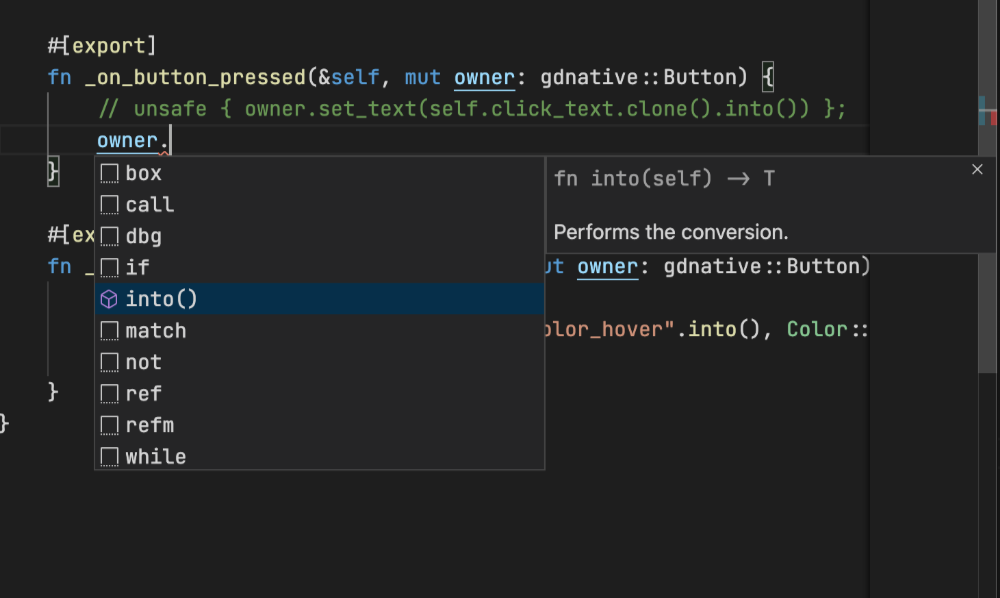

FAQ
Avoiding a BorrowFailed error on method call
Question
What is the BorrowFailed error and why do I keep getting it? I'm only trying to call another method that takes &mut self while holding one!
Answer
In Rust, there can only be one &mut reference to the same memory location at the same time. To enforce this while making simple use cases easier, the bindings make use of interior mutability. This works like a lock: whenever a method with &mut self is called, it will try to obtain a lock on the self value, and hold it until it returns. As a result, if another method that takes &mut self is called in the meantime for whatever reason (e.g. signals), the lock will fail and an error (BorrowFailed) will be produced.
It's relatively easy to work around this problem, though: Because of how the user-data container works, it can only see the outermost layer of your script type - the entire structure. This is why it's stricter than what is actually required. If you run into this problem, you can introduce finer-grained interior mutability in your own type, and modify the problematic exported methods to take &self instead of &mut self.
Passing additional arguments to a class constructor
Question
A native script type needs to implement fn new(owner: &Node) -> Self.
Is it possible to pass additional arguments to new?
Answer
Unfortunately this is currently a general limitation of GDNative (see related issue).
As a result, a common pattern to work-around the limitation is to use explicit initialization methods. For instance:
#![allow(unused)] fn main() { #[derive(NativeClass)] #[inherit(Object)] struct DataWrapper { data: Option<Data>, } #[godot::methods] impl DataWrapper { fn new(_owner: &Object) -> Self { DataWrapper { data: None, } } #[export] fn set_data(&mut self, _owner: &Object, additional_arg1: i32, additional_arg2: i32) { self.data = Some(Data::new(additional_arg1, additional_arg2)); } } }
Static methods
Question
In GDScript, classes can have static methods.
However, when I try to omit self in the exported method signature, I'm getting a compile error.
How can I implement a static method?
Answer
This is another limitation of GDNative -- static methods are not supported in general.
As a work-around, it is possible to use a ZST (zero-sized type):
#![allow(unused)] fn main() { #[derive(NativeClass, Copy, Clone, Default)] #[user_data(Aether<StaticUtil>)] #[inherit(Object)] pub struct StaticUtil; #[godot::methods] impl StaticUtil { #[export] fn compute_something(&self, _owner: &Object, input: i32) -> i32 { godot_print!("pseudo-static computation"); 2 * input } } }
Aether is a special user-data wrapper intended for zero-sized types, that does not perform any allocation or synchronization at runtime.
The type needs to be instantiated somewhere on GDScript level. Good places for instantiation are for instance:
- as a member of a long-living util object,
- as a singleton auto-load object.
Converting a Godot type to the underlying Rust type
Question
I have a method that takes an argument my_object as a Variant.
I know that this object has a Rust native script attached to it, called say MyObject.
How can I access the Rust type given the Variant?
Answer
This conversion can be accomplished by casting the Variant to a Ref, and then to an Instance or RefInstance, and mapping over it to access the Rust data type:
#![allow(unused)] fn main() { #[godot::methods] impl AnotherNativeScript { #[export] pub fn method_accepting_my_object(&self, _owner: &Object, my_object: Variant) { // 1. Cast Variant to Ref of associated Godot type, and convert to TRef. let my_object = unsafe { my_object .try_to_object::<Object>() .expect("Failed to convert my_object variant to object") .assume_safe() }; // 2. Obtain a RefInstance. let my_object = my_object .cast_instance::<MyObject>() .expect("Failed to cast my_object object to instance"); // 3. Map over the RefInstance to extract the underlying user data. my_object .map(|my_object, _owner| { // Now my_object is of type MyObject. }) .expect("Failed to map over my_object instance"); } } }
Auto-completion with rust-analyzer
Question
godot-rust generates most of the gdnative type's code at compile-time. Editors using rust-analyzer struggle to autocomplete those types:

Answer
People reported similar issues and found that switching on the "rust-analyzer.cargo.loadOutDirsFromCheck": true setting fixed it: